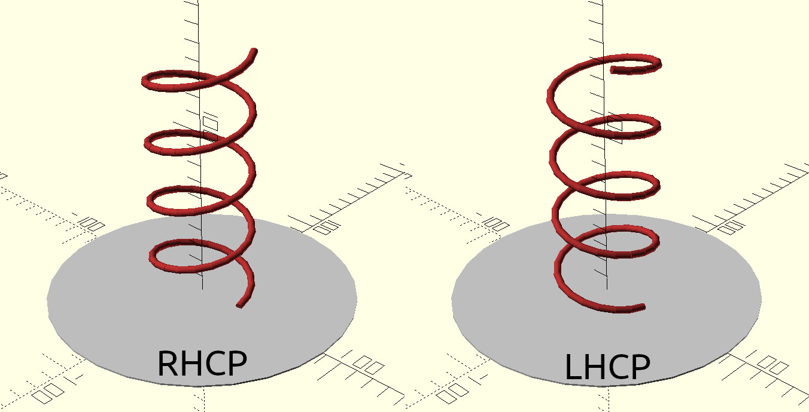
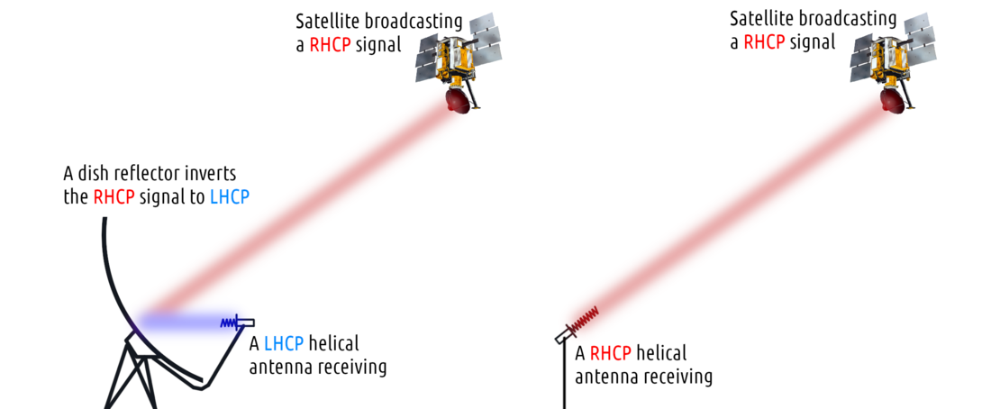
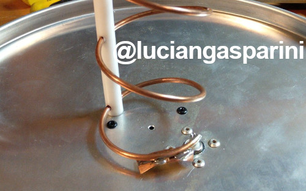

This is a simple helical antenna calculator that I've been using for my antennas and dish feeds, originally I had it only in a private spreadsheet document. It is based on the book "Antennas For All Applications" by John D. Kraus and Ronald J. Marhefka and the "ARRL Antenna Book".
Scroll below the calculator to see more information about how to properly build a helix as well as explanations of its individual properties.
The three user input values are repeated in the output just for the purpose of confirmation that your latest input was submitted correctly.
Depending on the way the helical conductor is wound, the resulting antenna will be either right-hand circularly polarized (RHCP) or left-hand circularly polarized (LHCP). A RHCP antenna will not be able to receive LHCP signals, while a LHCP antenna fails to receive RHCP. This is because of a theoretical infinite dB mismatch loss between RHCP and LHCP, although in the real world - where no antenna is perfect - even a RHCP helix will come with a (highly suppressed) LHCP component.
The polarization of a helix can be determined by looking down one of its ends; if the conductor turns in a clockwise manner then the helix is RHCP, if it is counter-clockwise then it's LHCP. As this can at first be confusing to imagine, I have created an image illustrating the visual difference between the two polarizations;

Continuing on the topic of polarization, one property of circularly polarized radio waves is that the polarization inverts when reflecting off a surface. This also includes the reflector of a dish antenna.
When using a helical antenna as a dish feed, it is important to use a helix polarization that is the opposite of the signal you want to receive. For example, if you want to receive a RHCP signal with your dish feeding a helix, then the helix has to be LHCP.

In the rare case of a dish reflector with additional subreflectors (Gregorian, Cassegrainian), the correct polarization flip has to be considered for each subreflector.
The Rmin and Rmax values refer to the range of optimal diameters for a theoretical circular reflector. In practice a square reflector is often used, in such case the Rmin and Rmax values define the range of the square side lengths.
A helical antenna in a normal configuration has a high impedance of 150 - 300 ohms, depending on the pitch. Ideally this should be reduced close to 50 ohm to minimize the mismatch loss between the helix and the coaxial connector and cable. One simple way this can be done is by deforming a portion of the first turn so that its pitch gradually changes, from almost parallel to the reflector to the nominal pitch of the rest of the helix.
Another common technique for helix impedance matching is adding a conductive strip to the first quarter turn, this increases the helix conductor's surface area and forms a "capacitor" with the reflector plate.
An example of a helical antenna utilizing both methods can be seen below.
